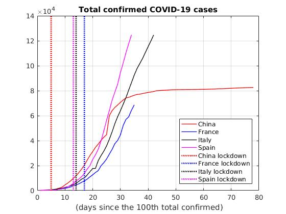
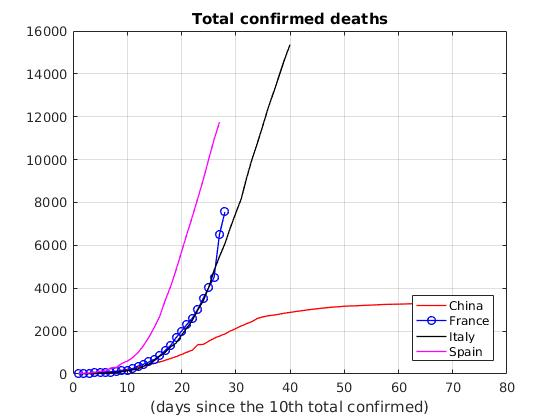
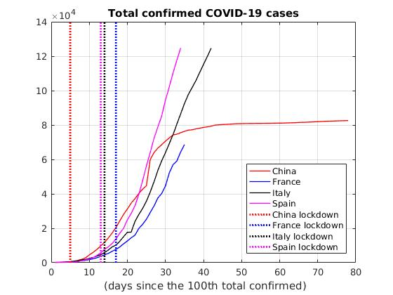
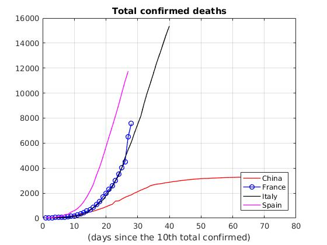

Jiao He
(何娇)
Post-doc researcher
LaMME
University of Paris Saclay
French version
Links
Scholar
Researchgate
Orcid
ArXiv
Adresse postale :
LaMME, Université Paris-Saclay
Bâtiment IBGBI, Bureau 414
23 bvd de France
Evry, France
Email : jiao.he@univ-evry.fr

I am currently a Post-doc researcher funded by the Programme Sophie Germain of FMJH
in LaMME at the University of Paris-Saclay.
My post-doc mentor is Diego Chamorro.
I finished my Ph.D in Institute Camille Jordan at the University Bernard Claude Lyon 1 under the supervise of Dragoş Iftimie and Lorenzo Brandolese. My dissertation is available Here.
I am currently working on the analysis of partial differential equations :
- Cauchy theory and regularity theory of models arising from the fluid mechanics
- Fluid-structure interaction, fluid-solid system and singular limit
- Fourier Analysis methods for PDEs, Lorentz spaces, Morrey spaces
- Harmonic Analysis tools: singluar integrals
I am also working on some modelling and simulations of dynamics of PDEs (more details can be found Here).
学而不思则罔 (Learning without thought is labor lost);
思而不学则殆（Thought without learning is perilous).
孔子(Confucius)
More words about COVID-19 :
From the two charts below, we can see that lockdown is an effective measure to control the spread of the pandemic.
In China lockdown started on 23 Jan. One month later, the trajectory for the number of new confirmed cases and deaths became flatter, meaning that the spread of the disease has slowed down. There is no doute that without lockdowns, the virus spreads uncontrollable. In Italy lockdown startd on 9 March, in France on 17 March, in Spain on 17 March...we can expect to return to a normal life soon due to governments' fast actions. The most important action we can do to fight coronavirus is to
STAY AT HOME.


Data : the data used here is published by the European Center for Disease Prevention and Control (ECDC).
Is China lying about their recovery with Coronavirus?
I know that China is not a country that is known for honesty, in particular, the Communist Party of China (CPC). One may doute the data of China (I do too). The number of confirmed cases and deaths may not be accurate, but the fact is that lockdown in Wuhan will end on 8 April. As the most populous country in the world, only Hubei province is the epidemic area in China. In my hometown province Sichuan, the number of confirmed cases is 558 while the number of deaths is 3. The population of Sichuan stands at 81 million and everyone is working and living normally now.
More data and informations about China can be found Here.
In the end, COVID-19 is a nasty evil thing, and I really hope we can get rid of it soon.
Post-doc researcher
LaMME
University of Paris Saclay
French version
Links
Scholar
Researchgate
Orcid
ArXiv
Adresse postale :
LaMME, Université Paris-SaclayBâtiment IBGBI, Bureau 414
23 bvd de France
Evry, France
Email : jiao.he@univ-evry.fr
I am currently a Post-doc researcher funded by the Programme Sophie Germain of FMJH
in LaMME at the University of Paris-Saclay.
My post-doc mentor is Diego Chamorro.
I finished my Ph.D in Institute Camille Jordan at the University Bernard Claude Lyon 1 under the supervise of Dragoş Iftimie and Lorenzo Brandolese. My dissertation is available Here.
I am currently working on the analysis of partial differential equations :- Cauchy theory and regularity theory of models arising from the fluid mechanics
- Fluid-structure interaction, fluid-solid system and singular limit
- Fourier Analysis methods for PDEs, Lorentz spaces, Morrey spaces
- Harmonic Analysis tools: singluar integrals
学而不思则罔 (Learning without thought is labor lost);
思而不学则殆（Thought without learning is perilous).
孔子(Confucius)
More words about COVID-19 :
From the two charts below, we can see that lockdown is an effective measure to control the spread of the pandemic. In China lockdown started on 23 Jan. One month later, the trajectory for the number of new confirmed cases and deaths became flatter, meaning that the spread of the disease has slowed down. There is no doute that without lockdowns, the virus spreads uncontrollable. In Italy lockdown startd on 9 March, in France on 17 March, in Spain on 17 March...we can expect to return to a normal life soon due to governments' fast actions. The most important action we can do to fight coronavirus is to
STAY AT HOME.
 
Data : the data used here is published by the European Center for Disease Prevention and Control (ECDC).
Is China lying about their recovery with Coronavirus?I know that China is not a country that is known for honesty, in particular, the Communist Party of China (CPC). One may doute the data of China (I do too). The number of confirmed cases and deaths may not be accurate, but the fact is that lockdown in Wuhan will end on 8 April. As the most populous country in the world, only Hubei province is the epidemic area in China. In my hometown province Sichuan, the number of confirmed cases is 558 while the number of deaths is 3. The population of Sichuan stands at 81 million and everyone is working and living normally now. More data and informations about China can be found Here.
In the end, COVID-19 is a nasty evil thing, and I really hope we can get rid of it soon.